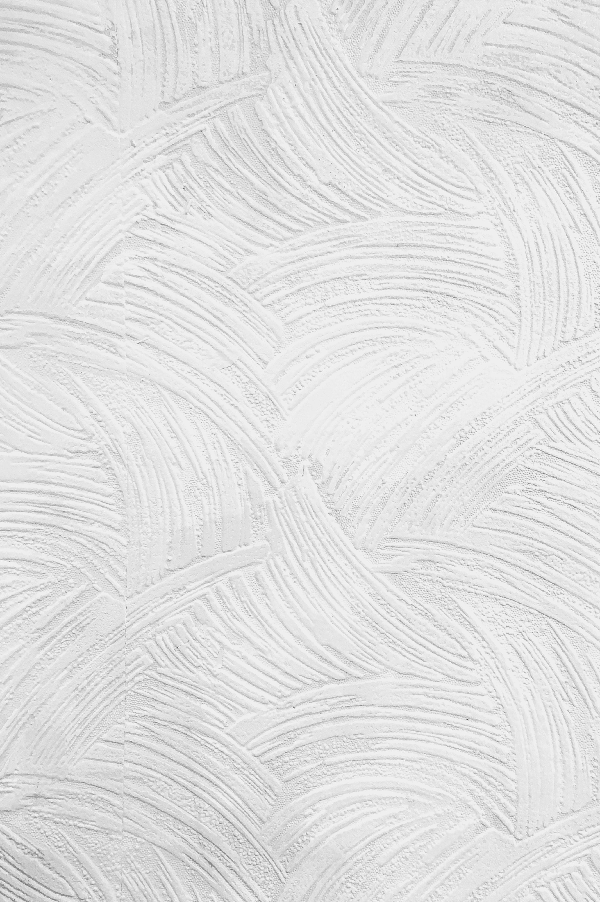

Find the second "three" and the first "four". Read as it says... Find the irregular and different As it will certainly help you unlock the final puzzle
Find the second puzzle's three 42 15 14 11 13 44 15 14, and the first puzzle's first four 31 15 44 44 15 42 43
Tap Tap Tap...
